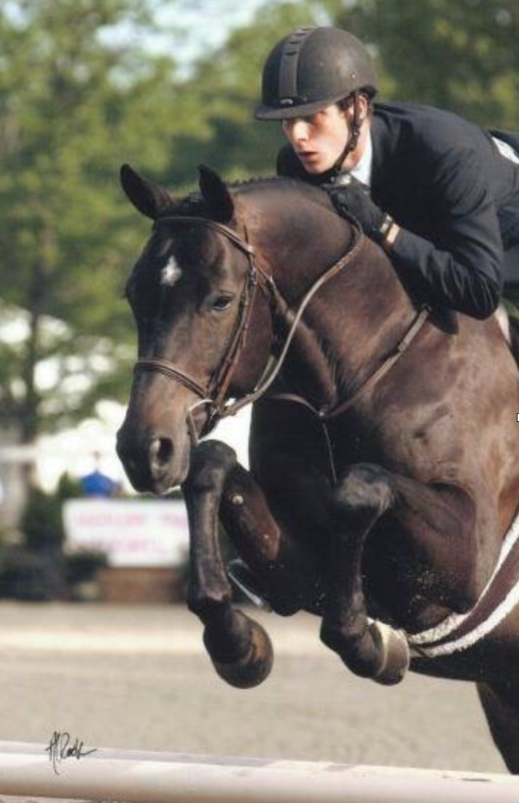

Zack Parks

Zach grew up riding at The Barracks in Charlottesville, Virginia. He had several successful horses including his 2007 USEF National Champion with his Small Junior hunter Cadeaux. Zach has competed at Devon, Harrisburg, Washignton International and many more. Aboard his horse Castleton, he won the 2007 Middleburg Horse Show derby, Maryland Horse Shows Association Medal Finals, Bryon Trophy among other awards. In 2007 Zach also received the Francis Newbill Rowe Sportsmanship award. He was a graduate of Virginia Tech receiving a Bachelors of Science in Animal Studies with an emphasis in Equine Studies. While at Virginia Tech, he competed on the Virginia Tech Equestrian Team. In the summer of 2010, Zach was fortunate to work with Olympic Gold Medalist, Joe Fargis. Following graduation, Zach was coach of the University of Virginia equestrian team; successfully taking the team to zones as well as having many individuals compete at IHSA Nationals. Following UVa, Zach went on his own creating Cadeaux Show Stables.